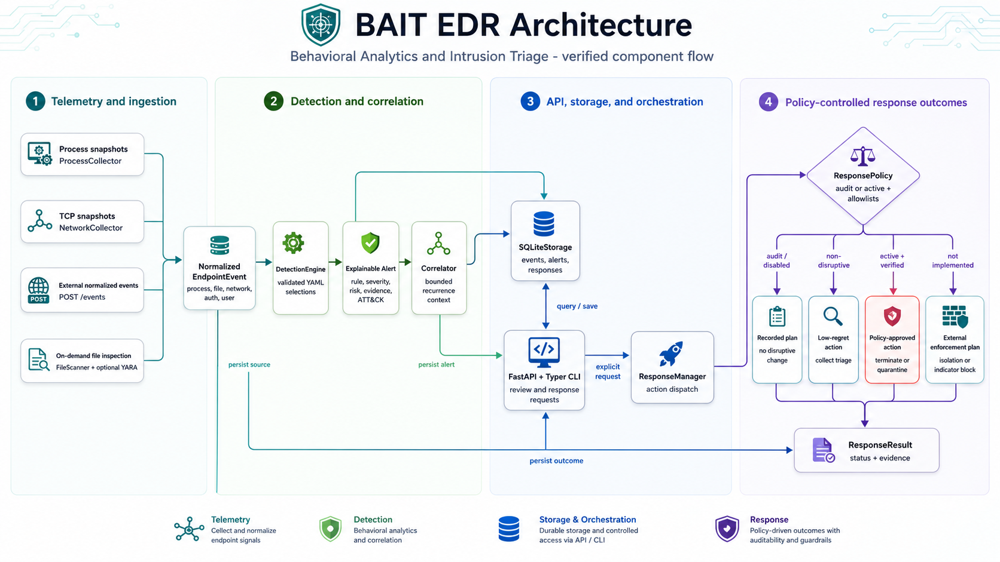
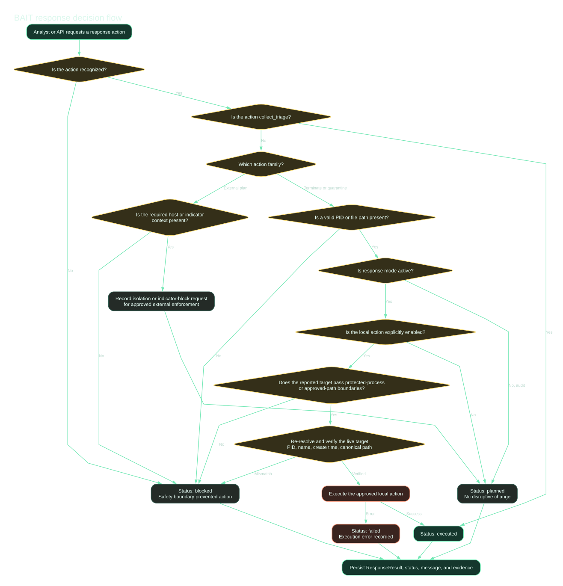
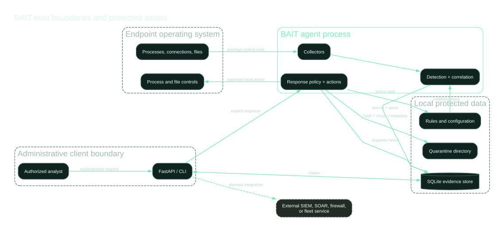

Open defensive endpoint security
Explain the signal.
Preserve the evidence.
Gate the response.
BAIT, Behavioral Analytics and Intrusion Triage, is a transparent EDR reference framework built around normalized telemetry, readable detections, bounded correlation, and policy-controlled response.
Audit mode by default
MITRE ATT&CK mapped
Apache 2.0
Python 3.11+
DETECTION
Suspicious Encoded PowerShell Execution
- severity
- high
- risk score
- 78 / 100
- ATT&CK
- T1059.001
- response
- planned, not executed
matched evidence
process.name = powershell.exe
command_line contains -EncodedCommand
Verified architecture
One traceable path from observation to recorded outcome
The diagram maps directly to classes and interfaces in the repository. Dashed or muted components are integration points or planned external enforcement, not hidden production capabilities.

docs/diagrams/architecture.dot.Detection content
Readable rules with visible limitations
Each alert includes the matching fields, severity, risk score, ATT&CK technique tags, original event context, and response recommendations.
Encoded PowerShell
Flags encoded command switches for contextual investigation.
Application to Interpreter
Detects script interpreters launched by document, email, or browser processes.
Temporary-Path Execution
Identifies executable content started from common temporary directories.
Uncommon Remote Port
Uses a low-context TCP remote-port heuristic that requires local tuning.
Authentication Failures
Evaluates a normalized aggregate event against a configurable threshold.
- id: BAIT-1001
title: Suspicious Encoded PowerShell Execution
status: experimental
severity: high
tags:
- attack.t1059.001
detection:
selection:
event.category: process
process.name|endswith:
- powershell.exe
- pwsh.exe
process.command_line|regex:
- "(?:^|\\s)-(?:enc|encodedcommand)(?:\\s|:)"
condition: selection
response:
- collect_triage
- terminate_processResponse safety
Confidence alone never authorizes containment
BAIT separates detection confidence from response permission. Local disruptive actions require active mode, explicit enablement, protected-target checks, and target identity revalidation.

Audit first
Disruptive requests are recorded as planned until administrators intentionally enable active mode.
Protect critical targets
PID 1, the BAIT process, protected names, and files outside approved roots are blocked.
Revalidate identity
Termination checks process name and creation time to reduce PID reuse risk.
Preserve evidence
Quarantine records the original canonical path, SHA-256 digest, alert ID, and result status.
Trust boundaries
Make every privilege transition visible
The endpoint operating system, BAIT process, local evidence, administrative clients, and future external services are modeled as separate boundaries.

Verification record
Claims backed by repeatable checks
Version 0.2.0 was tested locally with safe synthetic telemetry. Passing tests reduce known defects but do not certify production readiness or prove the absence of vulnerabilities.
Detection and correlation
Rule loading, operators, evidence reasons, thresholds, and risk escalation.
Response safeguards
Audit mode, disabled actions, approved paths, process identity, and unknown actions.
API and storage
Authentication, health, ingestion, alert retrieval, and SQLite round trips.
Documentation assets
Internal links, required metadata, image alternatives, and diagram source parity.
Release positionSuitable for research, demonstration, and controlled audit-mode evaluation.
Not a replacement for a mature enterprise EDR. Native kernel telemetry, fleet management, tamper protection, signed policy distribution, identity-aware authorization, and independently tested active response remain future work.
Get started safely
Validate the rules before collecting a live snapshot
git clone https://github.com/sunilgentyala/bait-edr.git
cd bait-edr
python -m venv .venv
source .venv/bin/activate # Windows: .venv\Scripts\activate
python -m pip install -e ".[dev]"
bait validate-rules --rules rules/builtin.yml
bait demo
bait run --once